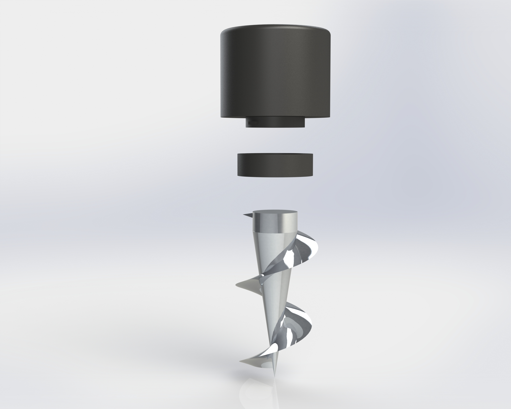
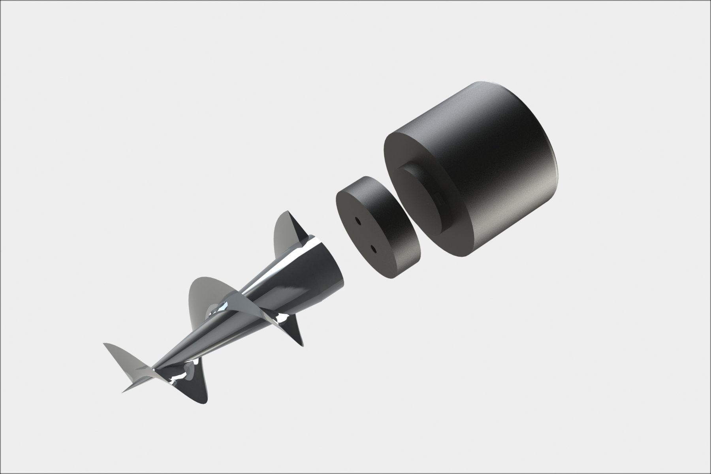

User research
Interviews, ethnographic observation and stakeholder surveys showed that outdoor drink containers needed a secure base that was quick to install, comfortable to handle and compact enough to transport.
Engineering Design Project | September 2021–April 2022
A modular screw-in cup holder designed to prevent drink spillages during outdoor activities.
The product combines a helical ground spike, removable cup holder and twist-lock connector to create a stable platform on grass, sand and loose soil.

01
Holding drinks securely on uneven outdoor surfaces.
Interviews, ethnographic observation and stakeholder surveys showed that outdoor drink containers needed a secure base that was quick to install, comfortable to handle and compact enough to transport.
02
Physical models and CAD iterations refined the fixation and connector systems.
User needs were translated into measurable design requirements.
A helical screw proved more stable than a conventional pointed spike.
A twist-lock mechanism balanced speed, simplicity and lateral strength.
PLA components were 3D printed and the aluminium spike was sand cast.
03
Exploded views communicate the three-part modular assembly.


04
Installation, stability, weight and usability were evaluated.
The spike remained stable under directional forces in sand and loose soil. The connector required little force and allowed the two parts to be joined quickly.
The spike required more installation force than intended and the cup holder was too short for taller 500 ml bottles. The revised design reduced spike size, increased holder height and enlarged the connector teeth.
05
ScrewIt developed my experience taking a consumer product from problem identification through user research, CAD, manufacture and evidence-based iteration.